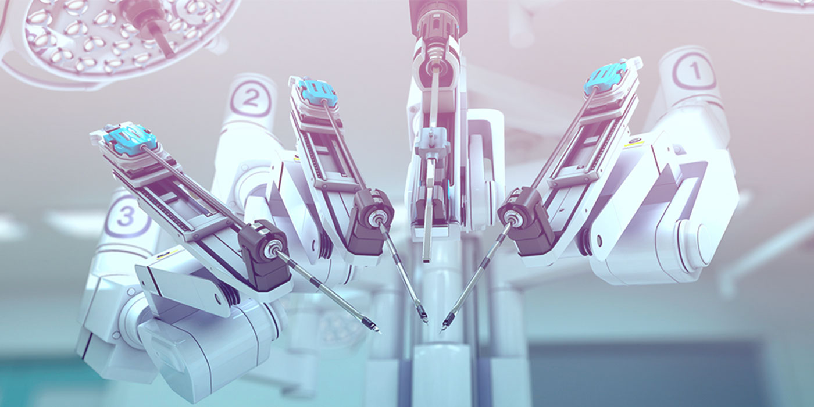
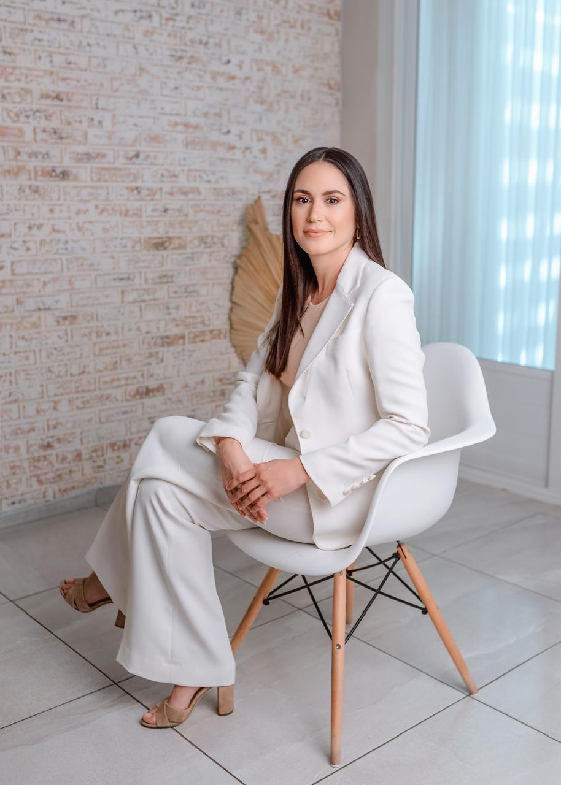

Líderes en cirugía oncológica
Nuestros esfuerzos están enfocados en brindarte los mejores tratamientos y manejos establecidos internacionalmente. Somos especialistas en cáncer.
Tú eres nuestra prioridad
Nuestras técnicas quirúrgicas avanzadas, como la cirugía robótica, ofrecen beneficios significativos para nuestros pacientes:
Extirpación más precisa del tejido tumoral
Disminución de riesgos
Recuperación más rápida
Somos los indicados para tu tratamiento
Atención integral para diferentes tipos de cáncer
Equipo médico capacitado y comprometido

Tecnología de vanguardia para el tratamiento del cáncer

Dra. Jacqueline H. Díaz Garza
La doctora Jacqueline y su equipo ofrecen una amplia experiencia y tecnología de punta para garantizar la seguridad y el trato humano a todos los pacientes.
Su gran experiencia, empatía y calidez con la que trata a sus pacientes y familiares demuestran su gran vocación de servicio y su aporte en la lucha contra el cáncer.
¿Tienes alguna pregunta?
Convenios
Pensando en tu tranquilidad, hemos establecido convenios con las mejores aseguradoras a nivel internacional, esto para poder brindarte atención que te mereces.


Eres nuestra prioridad